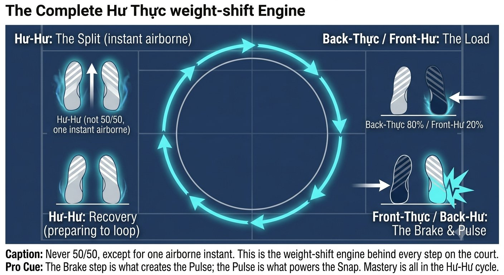
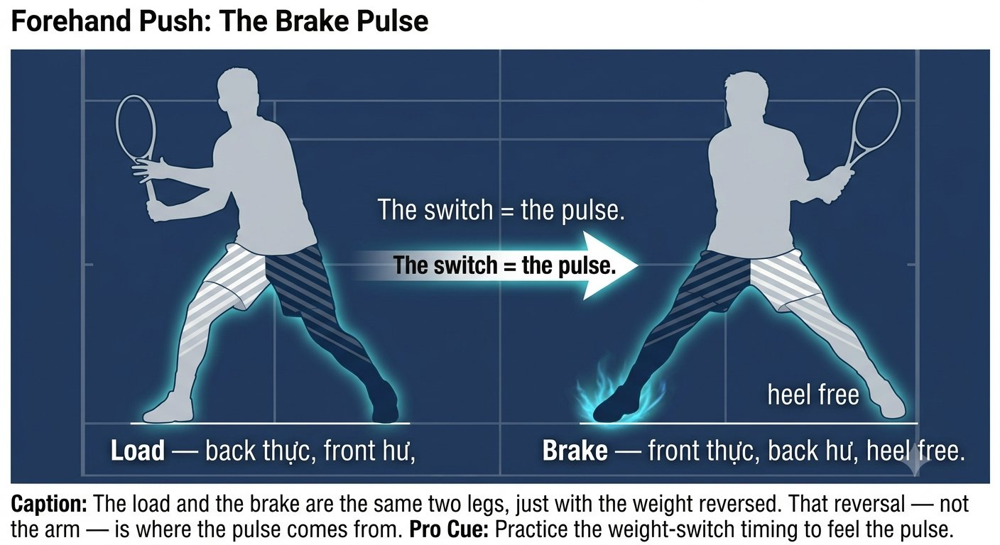
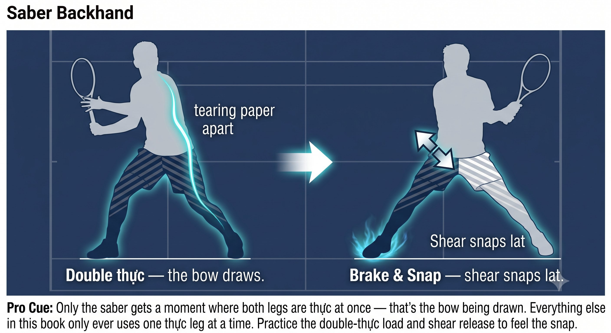
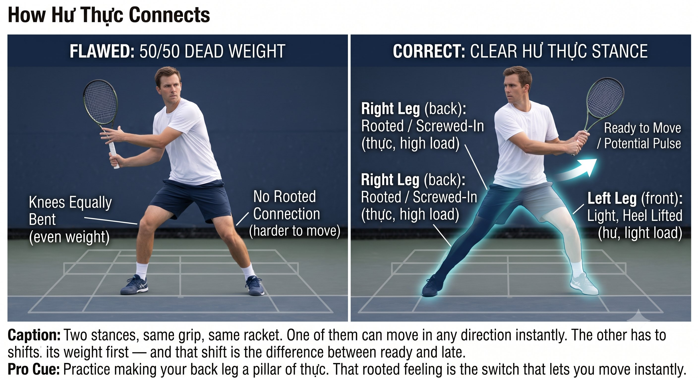

Chương 17: Bước Chân Hư Thực¶
Chuyển Đổi Rỗng-Đầy (Empty-Full Switching)¶
Bén rễ chưa bao giờ là một trạng thái tĩnh. Nó chuyển đổi. Hư thực chính là thứ làm bạn vừa ổn định vừa di động cùng một lúc.
Hư là rỗng — nhẹ, âm, sẵn sàng di chuyển, khoảng 20 đến 30 phần trăm trọng lượng. Thực là đầy — nặng, dương, đã bén rễ, khoảng 70 đến 80 phần trăm trọng lượng. Quần vợt không bao giờ là 50/50. 50/50 là trọng lượng chết.
— Henry Phạm

Hình 17.1
Hư Thực Là Gì¶
Quần vợt không bao giờ được chơi theo kiểu 50/50 — sự chia đều đó không có rễ và không có phanh trong đó. Các tay vợt đỉnh cao luôn ở trong trạng thái hư thực, chuyển đổi tức thì giữa hai bên.
Nguyên Lý Cốt Lõi¶
Bén rễ chưa bao giờ là một trạng thái tĩnh. Nó chuyển đổi. Hư thực chính là thứ làm bạn vừa ổn định vừa di động cùng một lúc.
Hư Thực Trong Bước Chân Quần Vợt¶
- Split Step — Đôi Hư, Sẵn Sàng Thành Thực

Hình 17.2
Trong không trung, cả hai chân đều hư. Khi hạ cánh, bạn đọc bóng:
– Bóng tới forehand: chân phải trở thành thực (bén rễ và vặn vào), chân trái vẫn hư (nhẹ, đang điều chỉnh).
– Bóng tới backhand: điều ngược lại xảy ra.
– Hạ cánh 50/50 và bạn phải dịch chuyển trọng lượng trước khi có thể di chuyển. Hạ cánh với hư thực rõ ràng và bạn đẩy đi ngay lập tức từ chân thực.
- Forehand Push — Sự Chuyển Đổi Hư Thực Chính Là Công Suất
– Nạp: chân sau là thực — tripod vặn vào, vòm chân nâng lên, đường xoắn ốc nạp lực. Chân trước là hư — ngón chân chạm nhẹ, đầu gối mềm, sẵn sàng bước hoặc phanh.

Hình 17.3
– Crossover của số 8: khi cây vợt rơi vào bên trong, trọng lượng bắt đầu chuyển — chân sau trở nên hư hơn, chân trước trở nên thực hơn.
– Phanh và xung: chân trước trở thành thực ngay tức thì — một cú vặn cứng, một trụ cột, cú phanh. Chân sau giờ đây là hư — gót chân nâng lên, tự do xoay. Sự chuyển đổi cứng từ sau-thực sang trước-thực chính xác là thứ tạo ra cú xung 1-inch.
Mẹo Huấn Luyện¶
Nếu chân trước vẫn ở hư, sẽ không có cú phanh nào — bạn ngã lùi mà không có xung lực. Nếu chân sau ở thực quá lâu, bạn không thể chuyển trọng lượng được, và cuối cùng bạn sẽ gồng cú đánh bằng chân sau thay vào đó.
- Saber Backhand — Đôi Thực Trong Một Khoảnh Khắc, Rồi Chuyển Đổi
Backhand cần sự ổn định nghiêng bên nhiều hơn:

Hình 17.4
– Nạp: cả hai chân đều thực trong chốc lát — bàn chân như xé một tờ giấy ra làm đôi, nền rộng, rễ sâu. Sự đôi-thực thoáng qua này tạo ra một độ căng khổng lồ ở đường lưng, giống như kéo căng một cây cung.
– Xung: chân trước vẫn thực, giữ vị trí nghiêng bên và ngăn ngực mở ra, trong khi chân sau trở nên hư và đẩy tới. Lực cắt giữa một chân trước thực và một chân sau hư chính là thứ làm bật lưng xô — cú xung của saber.
Đây chính xác là lý do vì sao cú backhand một tay trông rất vững chãi — chính khoảnh khắc đôi-thực đó.
- Hồi Phục — Hư Để Di Chuyển Trở Lại
Sau cú xung, chân trước vốn đang thực phải trở thành hư ngay tức thì — nhẹ trở lại, để bạn có thể đẩy về vị trí trung tâm. Giữ nó ở thực và bạn sẽ kẹt lại ở lưới sau đợt tấn công.
Vậy nên chu trình diễn ra: hư-hư (cú split) chuyển vào sau-thực/trước-hư (nạp) chuyển vào trước-thực/sau-hư (phanh và xung) chuyển vào hư-hư (hồi phục) — thay đổi liên tục, không bao giờ là 50/50.
Cách Hư Thực Kết Nối Với Mọi Thứ Đã Xây Dựng¶
Huấn Luyện Hư Thực: Cảm Nhận Rỗng Và Đầy¶
- Đi Chậm — Bước Mèo:
– Đi trên sân trong tư thế đánh bóng, chỉ dùng hư thực, không bao giờ 50/50.
– Nhấc chân hư lên — nếu bạn lung lay, nghĩa là bạn đang ở 50/50, chưa thực sự thực trên chân đứng.
– Mỗi bước, chân đứng phải hoàn toàn thực, tripod vặn vào. Đây chính là bước đi mèo của võ thuật nội gia.
- Shadow Với Đóng Băng:
– Shadow-swing một cú forehand rồi đóng băng tại pha nạp. Kiểm tra: chân sau có thực không? Bạn có thể nhấc chân trước lên mà không ngã không? Nếu không, nó chưa thực.
– Đóng băng tại pha phanh — bạn có thể nhấc chân sau lên không? Nếu không, chân trước cũng chưa thực.
- Gọi Tên Hư Thực:
– Nhờ đối tác nạp bóng trong khi bạn nói to "sau thực" tại pha nạp và "trước thực" tại tiếp xúc.
– Điều này buộc bạn phải có nhận thức. Sau 10 quả bóng, thì thầm nói, rồi im lặng hoàn toàn.
- Điều Tiết Công Suất Qua Hư Thực:
– 20% chạm nhẹ: một thực nông — khoảng 30% rễ, mềm.
– 50% rally: một thực vừa — khoảng 70% rễ.
– 100% xung: một thực sâu — vặn hoàn toàn, phanh cứng.
– Cùng số 8, cùng 45 độ — chỉ độ sâu của thực thay đổi.
CÚ ĐẤM 1-INCH CỦA BRUCE LEE: CHÂN SAU THỰC VÀO MẶT ĐẤT, CHÂN TRƯỚC GIỮ HƯ ĐỂ HÔNG ĐI QUA, RỒI MỘT CÚ PHANH TRƯỚC-THỰC TỨC THỜI TẠO RA CÚ XUNG.
Quy Tắc¶
Hư thực làm bạn vừa ổn định vừa di động cùng lúc — bén rễ như một cái cây, nhẹ nhàng như một con mèo.
Danh Sách Kiểm Tra Hư Thực¶
RỄ SAU THỰC. ĐẦU BẤT ĐỘNG. MẮT ĐÃ ĐỖ. SỐ 8 NHỎ TRÊN KÍNH 45°. CHUYỂN SANG PHANH TRƯỚC-THỰC. XUNG 1-INCH.
– Split step: một cú hạ cánh đôi-hư chuyển đổi tức thì sang thực trên chân đúng.
– Nạp forehand: sau thực (vặn vào), trước hư (nhẹ).
– Phanh và xung forehand: trước thực (vặn cứng, trụ cột), sau hư (tự do).
– Nạp backhand: đôi thực (rộng, xé giấy).
– Xung backhand: trước thực giữ, sau hư đẩy — lực cắt giữa chúng làm bật lưng xô.
– Hồi phục: trước thực chuyển đổi tức thì sang hư để bạn di chuyển được.
– Điều tiết công suất: 20% là một thực nông, 50% là một thực vừa, 100% là một thực sâu.
Chương Này Dẫn Đến Đâu¶
Chương này thiết lập hư thực — sự chuyển đổi rỗng-đầy — như biến số trong hệ thống Q-V-ROOT-8-45-Impulse-Kình CORE. Chương 18 bao quát sự bén rễ. Chương 19 bao quát hệ thống forehand push. Chương 20 bao quát backhand saber một tay. Chương 21 bao quát backhand hai tay dạng lai.
←Chương TrướcChương 16: Jin (Nội Lực)Chương TiếpChương 18: Bén Rễ (Rooting)→